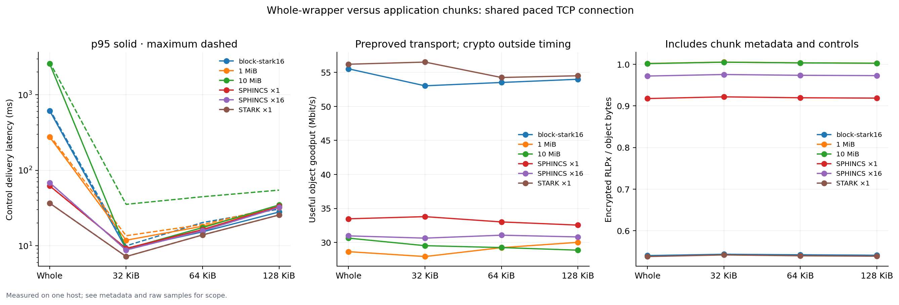
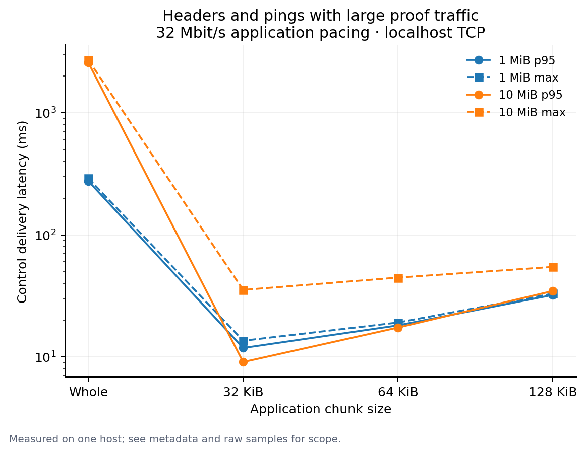
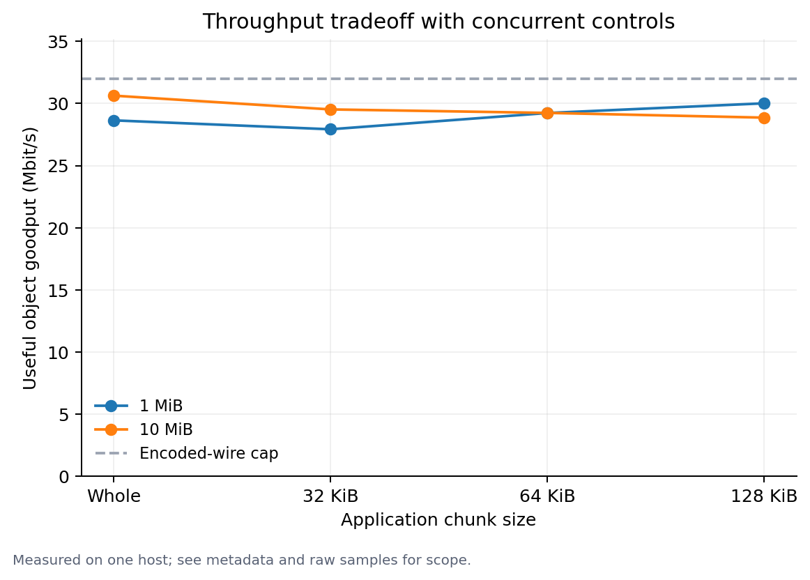

Localhost results are not WAN or mainnet capacity estimates. Load durations include drain time; consult raw rejection reasons and samples.
Raw JSON and samples · Row CSV · Samples are included in the JSON



{
"commandLine": "/Users/marc/nether/eip8288-lean/tools/artifacts/bin/LeanBench/release/LeanBench.dll --mixed-traffic=true --fixtures=/Users/marc/nether/eip8288-benchmarks/fixtures-daisugi --out=tools/LeanBench/results/2026-10-03/daisugi/mixed --repetitions=3 --chunks=0,32768,65536,131072 --wire-mbps=32 --probe-ms=20 --object-sizes=1048576,10485760 --proof-cases=sphincs1,sphincs16,stark1,stark16 --source-revision=ca380a6eaf4dfa35ef75ff5269109fe7f04d7cde \"--hardware=Apple M2 Max; 32GiB RAM; 12 logical cores\"",
"sourceRevision": "ca380a6eaf4dfa35ef75ff5269109fe7f04d7cde",
"hardware": "Apple M2 Max; 32GiB RAM; 12 logical cores",
"backendCommit": "f33f31bf7c1191667e29a68a3acae63b9164c1c6",
"sphincsWitnessBytes": 6208,
"utc": "2026-10-03T02:31:54.355976+00:00",
"os": "macOS 15.7.4",
"runtime": ".NET 10.0.9",
"logicalCpus": 12,
"compiledAssemblySha256": {
"Nethermind.Abi.dll": "BF35AEB4DDB1D79024697C0199BEE3A0C700B64F045EF7F98CB78EA19C51B80E",
"Nethermind.State.Flat.dll": "A81501B66E00BFD8A02BABB6BEFA6CD94D276D104D5B994A5B5274302D8DB421",
"Nethermind.Network.Dns.dll": "99AD40AEC7841C9CF177B60E91421245ED4C98E21225D0D8A9BDB71FAB89D62F",
"Nethermind.TxPool.dll": "01B06872EF950F31D8C8837A6A2E18AC53D6D214B408C6207AE37ABB15C49D2E",
"Nethermind.Consensus.Ethash.dll": "AB6C5A917594388BBE5FF12917746A7E0A2568649C969F4AE0A44C1DCCC55485",
"Nethermind.History.dll": "0B2B43B4A0FEEA76E964C8BA1587AE81FCD83222C96B39D7ABBB4BE3FD5C394E",
"Nethermind.Consensus.dll": "023C62D6137A165FE3E6576926C21525CE4E0A0E44BBED9061893836427ADD6E",
"Nethermind.Init.dll": "65400A5185455081C56F16811E94F8BA3726D3DB57129FC1AAA23F39A2ABC178",
"Nethermind.State.dll": "267C4D76843F6A79AC70690E893392D10FD636BC8CBA96699E106350E9E79EA6",
"Nethermind.Db.dll": "7B414F32DA770AC55F7A71F2A35D295406131030D67C96ED738D6CBD737706AB",
"Nethermind.Blockchain.dll": "D2578E556511A03ACE5EC9E2AE6FBEFD00505D1F460F30B08C3D5AF4DB1D2ABB",
"Nethermind.Serialization.Rlp.dll": "B381982224593E7F380AFFE939084171E8DF4153995E962E3FBA75949F4474FF",
"Nethermind.Kademlia.dll": "809085BB3A0388B94C3979D68A16D6B853A41FDF6CAB74D4B88E81D2CCBBE6B9",
"Nethermind.Evm.dll": "4D1B8ABCD9BEFD933D8C28F8E70BD39C061358582B08FEE4CD108EB4D5EF3255",
"Nethermind.Facade.dll": "A896365A5158837F02F01C9705E4757B39DB9D31845DC531E9D28C8B63FAD80C",
"Nethermind.TurboPForBindings.dll": "775BF6D9C2090D0407DF52EA6F0A3D6DAC04E1B2B7DDDEDC9F9B879BCC078A04",
"Nethermind.Core.Test.dll": "2B761C359FFC3DBC0BEAD86494F075E6AF4EE77301ECA23781B49E8041ACF590",
"Nethermind.Crypto.Bls.dll": "0C59D1EB75EC66CF2CF4906041AF89A3CDB32681E660E8026C02EDAC5B58A678",
"Nethermind.Consensus.AuRa.dll": "1FCAEA3A9EA5DDA44412A03E6CE279043CDBCE8C4CE931C4D73621A2EB57E2D0",
"Nethermind.JsonRpc.dll": "BED55EFA4022ED3D9018AE5334138F57A749C7E315CD015B3C14E0300AE4C9F2",
"Nethermind.Network.dll": "4B3EBB453CD5AC6D316A665878F0CB7AE659C21827BC3F6E22959A47F0FCBA1F",
"Nethermind.Network.Enr.dll": "268AD6BD51C3D08210653CE09A002100DB5C6ABBC4B6D1B146FCF58AAB83B89C",
"Nethermind.Serialization.Json.dll": "C61F7CA54FF34F934944B779B8DE31C01BAEFAE752BC4EF1488EBEAD811D32ED",
"Nethermind.Merge.Plugin.dll": "23F40E07A4DAF78B1098407E8364EBA47FCEFAD5560ACF77F0A1F8D63ECA873D",
"Nethermind.Api.dll": "350B19DD98F4A7BD58F17DBD8AD9D520285A79F020A34824AF76D24791453791",
"Nethermind.State.Flat.History.dll": "B29D2151656C74835E5D6DB58B0CC66895C65AAA4743B7EF9226BF7274822B3F",
"Nethermind.Crypto.SecP256k1.dll": "259D3021149DC5E8C5AF82C6528B1EAE243A833A8E42C7C8818A9E89E73B52A4",
"Nethermind.RocksDbBindings.dll": "3EF36BF7A7B3C3170D35D6F265E89C9B7BE0DA29444B44C4D4C1AB34C41A6538",
"Nethermind.Int256.dll": "60DC19F9C2DFCDB1FD265B4B691BDF40545CABB93D4C8A3F2DCCEFEBDA122BEA",
"Nethermind.GmpBindings.dll": "7F218D5EB18DAB843EF5E6569A05BD969CFA722D1B260039F7B834DFE9E1C744",
"Nethermind.Logging.dll": "11778735B60558987E4AF6AAD2A66A8E28A624271E8200629CE0A932135E1409",
"Nethermind.Logging.Microsoft.dll": "B6F32B765EADED7530B1B9D4BFA94E247C76B444122138D98DD256CA18A00BAE",
"Nethermind.Network.Contract.dll": "7F1BA21CDC1395907CF316ABF35ED018D6F9E6F0FCCD46C32A53AA0DD1ED46CE",
"Nethermind.KeyStore.dll": "079ADA9F8B145580754B4530E03D9748A3C6BDD956F78F91E86AC5CDBB00BE87",
"Nethermind.Crypto.SecP256r1.dll": "E70BEA90441AAB17CA12595497C5EA8BA22FE5E2A7D38F1517B0F893B7F28028",
"Nethermind.Specs.dll": "182DC2FD93BC66FB5B63905EFB9A736F39241B6CE45572291FA8E77ED2B9D464",
"Nethermind.Db.Rocks.dll": "4CC7EDC5EFCAC4699D27E2C9253FF5BF3E928D5E2F1E15D5DBDEC56B950B3E71",
"Nethermind.Evm.Precompiles.dll": "45C463154CBE61B536100CFC432BCBBD8166917D34E385A71D57A694DC1B0287",
"Nethermind.Monitoring.dll": "C9AA1364990DE9488BADDBD3CB31B645DC868AC487C1845456491FB04B2EB06D",
"Nethermind.Specs.Test.dll": "D650597751294EB43F8E168FD8D0852D5DF61C89740D209A16501C9B21C51C2D",
"Nethermind.Network.Stats.dll": "990A398CC7CD0A37FA4B467D3F77379006CE98478749FD2FD5B0A8243A96E26E",
"Nethermind.Trie.dll": "AD8D98CE51CFC1F7CE855F909068E033A673F062D62EDA9B2199A29E4F1C1154",
"Nethermind.Config.dll": "16B9B34B5EABB503073DD4FD723DC5FDE3BC8B5063317314587F8AAC607699A1",
"Nethermind.EraE.dll": "01AB398D8BDA543FBA163C09A7371039847A7D2D8F666689CF835D83F1CD5F75",
"Nethermind.Sockets.dll": "B2DF3DCE2CAB274DEAF7A0DF8B33788B03B79FB69E1DA3ECF1AFF1DC83C14FF0",
"Nethermind.MclBindings.dll": "B02A0EFD6B812C142AD757697FC796FF6DD242E87CBB96B171D0E23D5A817EF8",
"Nethermind.Era1.dll": "C600D7110F2770A15F817181A3B87383A7AF08DC5C63075E3E5C057A39CB6E65",
"Nethermind.Wallet.dll": "ABE97D28830B9D607BC618A22099F33D8B50A744603BE3FCB56D444C46229014",
"Nethermind.Crypto.dll": "119DDAA44B563C94B81B42690227392E4AC5EC1828506BD2E9819A5E1FD60E14",
"Nethermind.Db.Rpc.dll": "758E077E44159989DC58A1F27639F6CBE2C8857663F54D8A9498E81DE23B6C87",
"Nethermind.Network.Discovery.dll": "5B02B1BEA424D9F33C86FC9F6A83261B06EBE5E010C8A65B5799E74DE5782C97",
"Nethermind.Synchronization.dll": "F96354C3B30A3A48AECF5AE6E4F22913F60320422C75683AC04684FCB05C5518",
"Nethermind.Core.dll": "3DFD7A302FF2FE2CF1D4E8A26205DB89487D40F1D3E167A4DD1C77B9BFCCCEE7",
"Nethermind.Serialization.Ssz.dll": "91233FFC2657E76C893BDD58647B6985AEE66DD389ED1249BE0D1EC44A21C27B",
"LeanBench.dll": "5BC6B222B438BEEF25CE94C66609790D05C9A685B1ABA7910E7A64E84E5C4A6D"
},
"nativeLibrarySha256": {
"libnethermind_lean.dylib": "6E3F536C842205F3F890A9BC44262B01C66DC35DE801A8456BB9B5546B0838DE"
},
"transport": "Real localhost TCP, production PacketSender/Snappy/AES/MAC RLPx; preset session secrets; no handshake timing",
"pacing": "Application wire-byte cap at terminal socket writer, 4KiB send quanta; not kernel network shaping; no simulated loss or WAN RTT",
"methodology": "Same payload repeated per row; fresh TCP codec state per row and production reassembly state per repetition to measure transfer rather than duplicate suppression. Controls cycle real serialized eth GetBlockHeaders, one-header BlockHeaders responses and p2p Ping. Latency is scheduled request-to-receiver delivery, not response RTT. Whole wrapper awaits one actual write; chunks await each actual write and yield. Wire bytes include controls and encrypted RLPx, excluding TCP/IP. Synthetic objects are incompressible. Real objects are natively proved and verified before timing; block-stark16 is a raw block proof envelope, not a mempool-valid wrapper (wrapper limit is one generic dependency); repeated delivery measures transport only, not admission or crypto throughput. Object goodput uses transfer interval; CPU uses whole row. Preparation cost is one observation per proof case, not a warmed crypto benchmark."
}